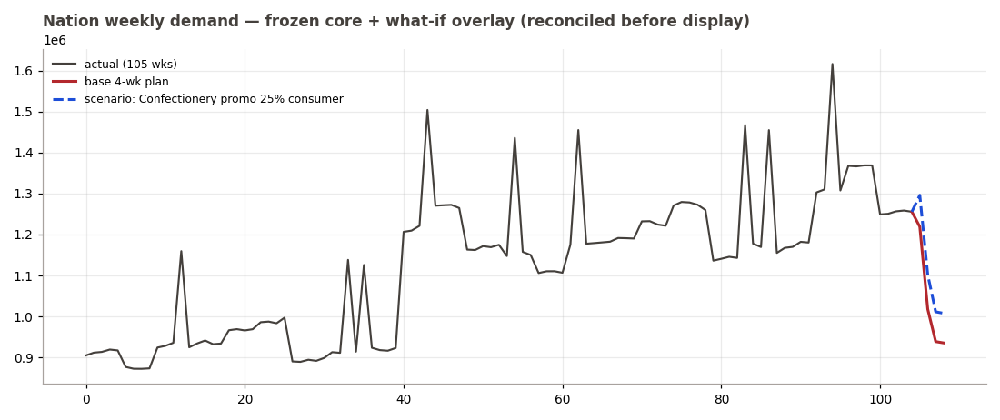
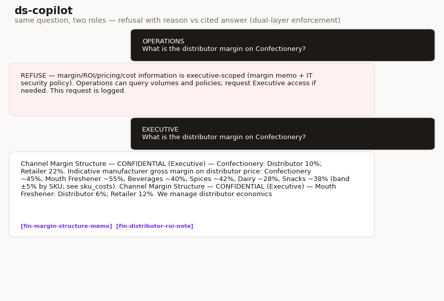
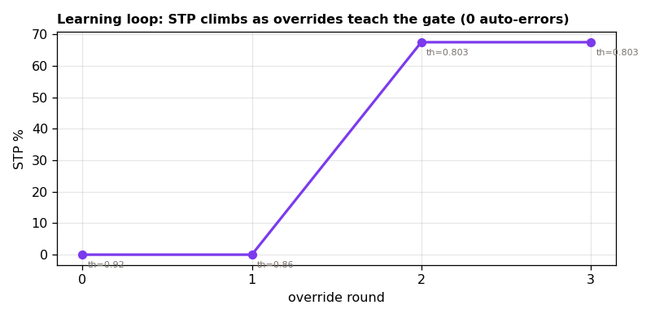

Most AI strategy decks stop at the slide. This one ships the code: 30 use-cases scored and prioritised, and the three biggest ones built end-to-end — so the claims can be checked rather than believed.
Each number below is printed by a test in the repository — not a marketing figure. The rupee estimates elsewhere are labelled as estimates with their basis written down.
Each runs locally as a small Python service with an accessible, plain-language interface. Screenshots are from the real running apps on synthetic data.
Planners guess what will sell and run promos on instinct. The cockpit forecasts demand, recovers price sensitivities from past promotions, and lets you test a change before committing — every scenario re-checks the maths before it shows a result.

Staff can't find answers across policies and data, and sensitive numbers leak. The assistant answers only from official documents and a governed database — every answer is cited, and margin data is refused to Operations but served to Executives, enforced at two independent layers.

Every invoice gets human eyes, most for no reason. The checker matches invoice → PO → GRN against written rules, clears the clean ones automatically, and sends only the genuinely ambiguous ones to a person — with a plain-English reason. Your decisions teach it, and its confidence is calibrated, not guessed.

⚙️ These apps run locally (they're Python services, not static pages) — the quick-start below starts all three in about a minute. This hosted page showcases them; the strategy documents below are fully interactive right here.
Fully interactive on this site — no install needed.
Everything is offline and needs no API key. Python 3.12.
Clone the repo, then double-click files practice/START_ALL.bat. It installs the packages, starts all three apps, and opens the home page.
git clone https://github.com/rajtripathi05/Ds-.git cd "Ds-/files practice" python -m pip install pandas numpy matplotlib openpyxl # each in its own terminal cd ds-demand-cockpit/ds-demand-cockpit && python src/server.py # http://localhost:8765 cd ds-copilot/ds-copilot && python src/db.py && python src/server.py 8770 # http://localhost:8770 cd ds-doc-to-decision/ds-doc-to-decision && python src/calibrate.py && python src/server.py 8780 # http://localhost:8780
Run the test gates yourself: python tests/run_tests.py (cockpit), python tests/eval_harness.py (assistant → 25/25 · leaks 0), python tests/gate_m3.py (robot → 40/40 · 13/13).